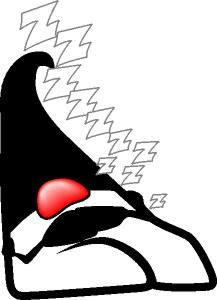

Advanced course in Sleep Deprivation
Slightly less than two weeks to go until JavaOne and Sleep
Deprivation is starting to hit everyone on the team. It's going to
be a very exciting show. The t-shirt hurling contestants are
finishing off their devices. The three finalists were chosen a
while ago. They'll each be launching at one of the Sun keynote
sessions. The last will launch during my keynote session on
Thursday, where we'll show short videos of the other two launches
and have the audience vote on the winner. Support the contest and
buy a t-shirt at
CafePress.